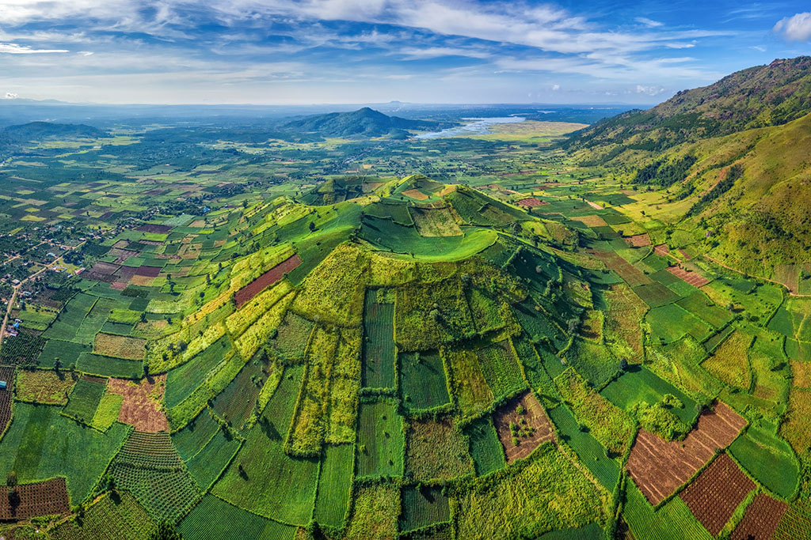
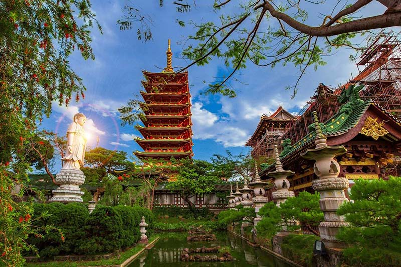
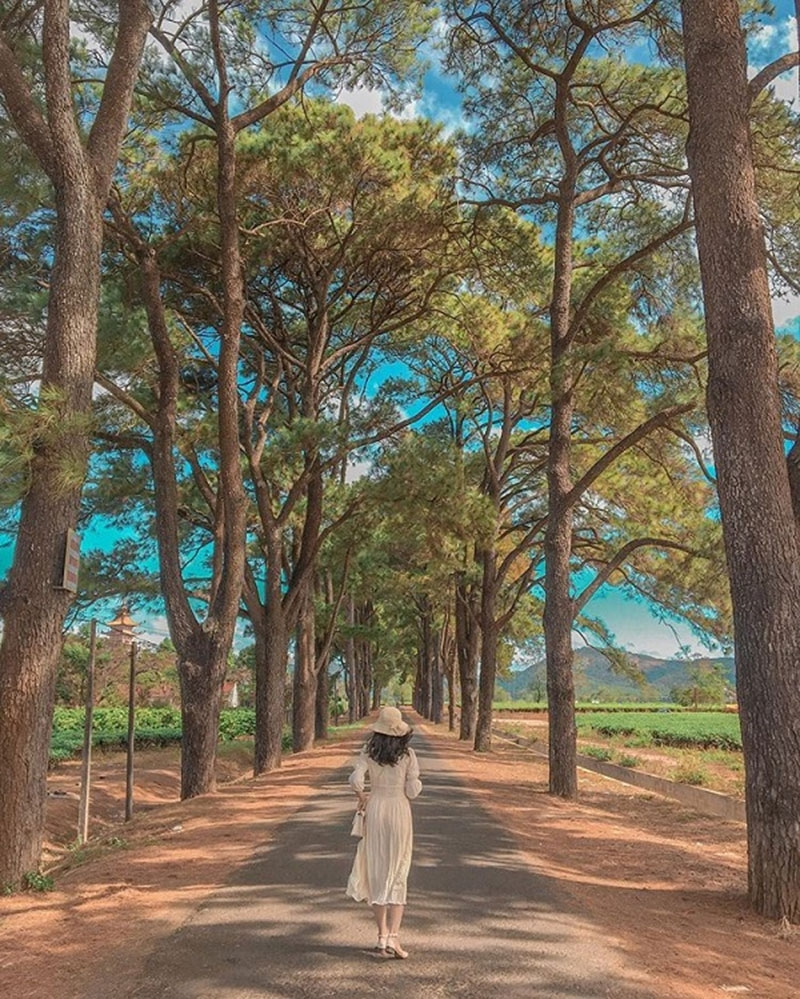

Gia Lai - Trải nghiệm và Chia sẻ
Gia Lai - Trải nghiệm và Chia sẻ
1.Chùa Minh Thành - Ngôi chùa mang phong cách Nhật Bản giữa phố núi Gia Lai

2.Biển hồ Gia Lai - “Đôi mắt xanh biếc” của thành phố Pleiku

3.Biển Hồ Chè - Bức tranh xanh mát của núi rừng Tây Nguyên

4.Núi lửa Chư Đăng Ya, điểm đến tuyệt vời tại phố núi

Nằm tại phía Bắc Tây Nguyên, Gia Lai nổi tiếng với nhiều cảnh quan thiên nhiên hùng vĩ, ẩm thực đặc sắc và các lễ hội địa phương đầy sắc màu. Đặc biệt, thời tiết đặc trưng của Gia Lai mang đến sự đa dạng và rực rỡ cho cảnh sắc thiên nhiên suốt 4 mùa trong năm. Thoạt nhìn thì có vẻ đây là một tọa độ ít điểm du lịch nhưng hóa ra lại nhiều không tưởng. Theo chân Traveloka để cùng khám phá ngay các địa điểm du lịch Gia Lai hấp dẫn không thể không check-in nhé.
Cách trung tâm thành phố hơn 20km, núi lửa Chư Đăng Ya là tọa độ yêu thích của hội mê khám phá thiên nhiên. Cụm từ “Chư Đăng Ya” trong tiếng dân tộc J’rai có nghĩa là “củ gừng dại” và liên quan đến một câu chuyện cổ. Nằm giữa những thửa ruộng chữ nhật của ngôi làng Ploi lagri, đây vốn là một ngọn núi lửa đã ngừng hoạt động hàng triệu năm.
Đâu chỉ có rừng cây, ao hồ hay núi non hùng vỹ, Gia Lai còn có một tọa độ check-in đậm chất Á Đông, chính là chùa Minh Thành. Nằm trên một ngọn đồi cách trung tâm thành phố 2km, ngôi chùa này được xây dựng từ năm 1964 và trở thành nơi hành hương, thờ cúng quen thuộc của người dân địa phương.
Minh Thành được xem là ngôi chùa đẹp nhất Pleiku khi kết hợp hài hòa giữa kiến trúc Nhật Bản và một ít Trung Hoa. Từ tháp chính điện, hàng liễu và tượng điêu khắc trong khuôn viên sân vườn cho đến thiết kế mái lợp, mọi chi tiết trong quần thể công trình này đều làm bạn cảm giác như đang lạc bước vào ngôi chùa nào đó ở xứ Phù Tang.
Cách nội đô Pleiku tầm 13km, Biển Hồ Chè là trang trại trồng chè do người Pháp lập ra đầu tiên tại mảnh đất Gia Lai vào những năm 1920. Nằm trên cao nguyên Pleiku, Biển Hồ Chè ngập trong màu xanh mướt mát của những cây chè mọc theo hàng thẳng tắp và được tươi tiêu bởi nguồn nước từ hồ T’nưng.
Vì nằm trên cao nguyên nên không khi tại đây lúc nào cũng trong lành và thời tiết cực dễ chịu. Đặc biệt, cung đường dẫn tới Biển Hồ Chè được bao quanh bởi hai hàng thông có tuổi đời hơn 100 năm. Với vẻ đẹp tựa như Hàn Quốc, đây là tọa độ check-in quen thuộc của hội mê chụp ảnh khi đến đây.
1.Sàn gỗ việt

2.Tìm hiểu thêm về Gia Lai

3.Báo Gia Lai điện tử